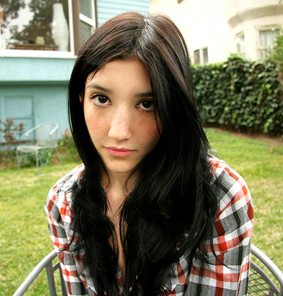
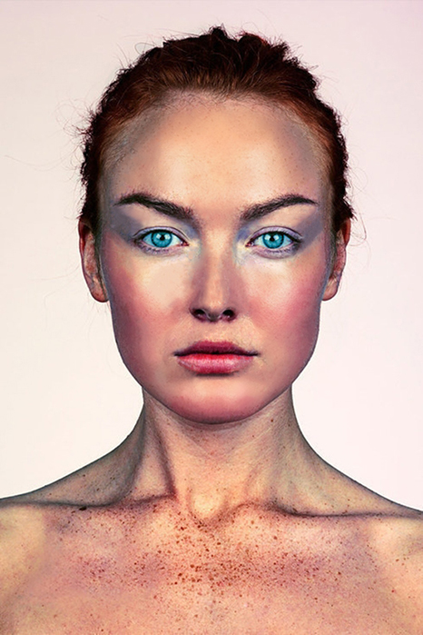
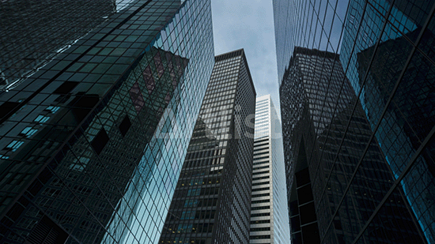

Vježbe iz piksel grafike
 Tehnikom retuširanja uklanjamo nedostatke pri čemo želimo ostaviti dojam stvarne fotografije i osobe na njoj pomoću opcija: Dust & Straches, Clone Stamp, Heal te korekcije boja. pomoću Burn/Dodge brush, Brightness/Contrast, Levels.


Neinvazivno koloriranje primjenjujemo u šestoj vježbi na crno-bijele slike i slike u boji kojima želimo promijeniti nijansu određenih područja. Andy Warhol je bio inspiracija za odabrani dizajn.

Trebali smo pogoditi perspektivu umetnutih objekata, tonalitet i sjene. Izrezivanjem dijelova različitih slika pomoću Lasso tool-a, obrada detalja u Quick Mask Mode-u i spajanje svega u jedinstvenu cjelinu.
Drugi projektni zadatak

Kreirati sliku kao kompoziciju više fotografija koristeći tehnike retuširanja, fotomontaže i koloriranja. Cilj projekta je realističnost umetnutih objekata.
Web i video vježbe

Trebali smo osmisliti kinemagraf (video isječak čija se sekvenca ponavlja u beskonačnost, najčešće u GIF formatu, a u kompoziciji spaja pokretnu i statičnu grafiku (sliku i video)).
Deveta vježba, učimo rezati i spajati video isječke iz više izvora, dodavanjem video efekata (zoom, ubrzavanje, blur, slowmotion, fade In/Out...) brisanjem i dodavanjem zvuka, obradom teksta...